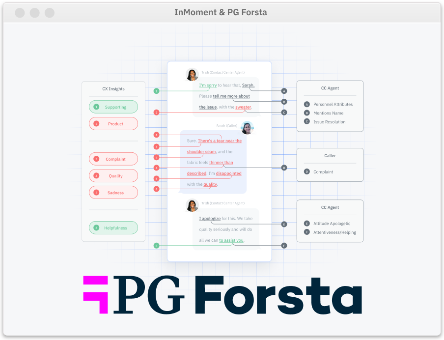
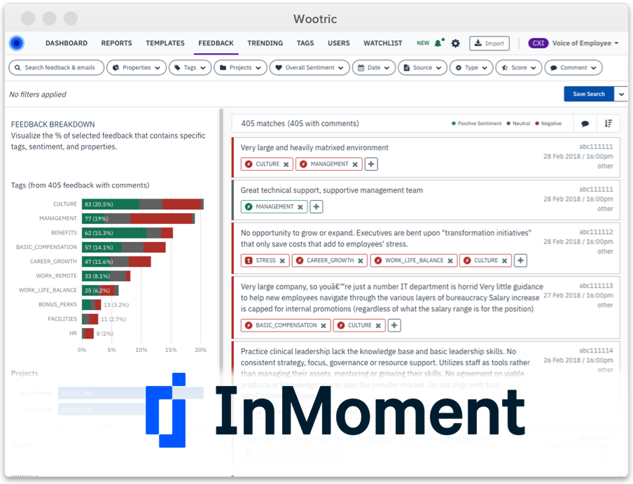
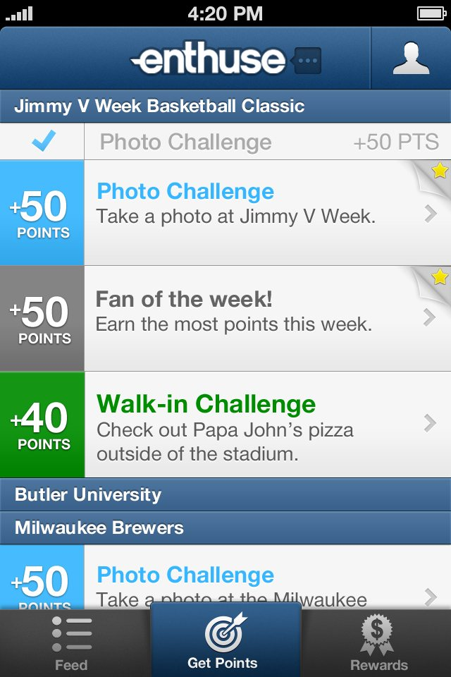
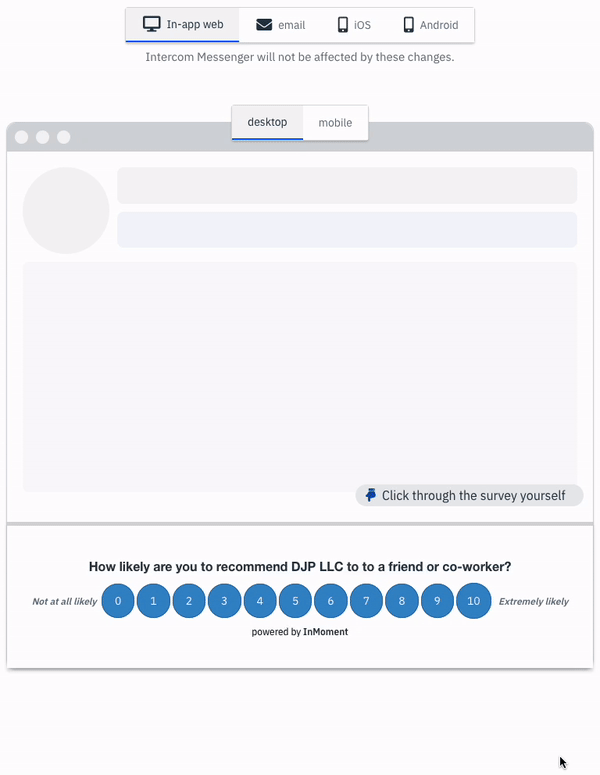
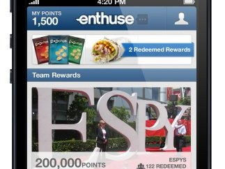

Daniel Pitrowiski
Known for leading startup design teams from zero to acquisition.
Background
Daniel "DJP" Pitrowiski is a California-based product designer with 16 years of experience designing software. He is best known for a decade leading design for the Wootric customer experience platform, which carried him through acquisitions by InMoment, Press Ganey, and Qualtrics. Enterprise customers of that platform include Foot Locker, DocuSign, Zoom, and Glassdoor across more than 80 countries.[1]
Case Studies
Full write-ups for each project are linked below.

Press Ganey (now Qualtrics)Leading the Wootric platform inside Press Ganey
AI tools that digest feedback at scale and close the loop.

Wootric · InMomentCXInsights: AI feedback analysis that took Wootric from $1M to $5M ARR
What do you do with all your customer feedback?

EnthuseEnthuse: 10,000 sign-ups in one launch week
Points, rewards, and fan-engagement for a sports-loyalty startup.
Articles
-
UI for AI-powered Customer Feedback Insights
My article from when CXI went live.
-
Five Lessons for a Small Team Product Manager
Practical product leadership for startups.
-
Thinking Backwards
How reframing one core question at Bliss pointed the product toward market fit.
Career
Press Ganey (now Qualtrics) 2025–2026
After Press Ganey's acquisition, Pitrowiski led design for the Wootric platform within Press Ganey Forsta, focused on surveying customers and using AI tools to digest feedback at scale and close the loop with each respondent.[2]
Building an AI-CRM at Wootric and InMoment 2015–2025

Pitrowiski joined Wootric in November 2015 as Senior Product Designer. Wootric's surveys have reached billions.[3]
He led the design and launch of CXInsights, an AI-powered customer experience platform that turns large volumes of open-ended feedback into themes a team can act on.
In January 2021, InMoment acquired Wootric.[4]
Developer analytics at Bliss 2015
Lead Design for an automated technical-debt management system.[5]
UX Designer and Product at Vacatia 2013–2014
Managed features from planning, design, to technical specification.[6]
Sports loyalty at Enthuse 2010–2013

As UI/UX lead at Enthuse, a SF sports-loyalty startup. Daniel designed the iOS, Android, and web apps that rewarded college sports fans with real rewards for engaging.
UMiami, the first major partner, launched to have 12,500 fans, 27,000 check-ins, and 40,000 game RSVPs in its first quarter. In 2012 the company raised $1.3M.[7] Read the case study →
Side projects
-
Custom AI Agent for Evaluating Trades
An AI agent, originally built on Google AI Studio's Gemini, that evaluates MLB trades and gives deep analysis.
-
Knight of the Living Dead
A roguelike RPG built entirely in HTML, CSS, and jQuery. Players who reach the end get weather effects, including rain, thunder, and a darkening sky.
Toolkit
- Claude
- Figma
- Rapid Prototyping
- Cursor
- Product strategy
- HTML · CSS · jQuery
- iOS · Android
- AI Design
- Codex
- Cross-functional Team Leadership
- Github
- Midjourney
- Presentations
- Vercel
- Web
- Linear
References
- About Daniel. danpitrowiski.github.io.
- Press Ganey Forsta. pgforsta.com.
- Wootric. wootric.com.
- InMoment Acquires Digital Feedback Leader Wootric. InMoment, Jan 2021.
- Bliss. blissai.com.
- Vacatia. vacatia.com.
- Enthuse raises $1.3M from Greystripe co-founder and others. TechCrunch, December 2012.
External links
How likely are you to recommend Daniel to a friend or colleague?
danpitrowiski@gmail.com